무인양품 접이식 컨테이너 · 한국 품절 현황 + 일본 라인업
· 한국 품절: 창문형 50L 반투명은 공식몰·네이버 둘 다 품절, 창문형 50L 화이트그레이는 공식몰 품절·네이버만 판매중
· 20L(화이트그레이·반투명)은 두 곳 다 판매중
· 일본에만 있는 것: 창문형 20L, 전용 뚜껑(20L ¥490, 50L ¥790)
· 랙 칸 590 기준: 20L 2단 = 550, 20L 2단 + 뚜껑 = 580(여유 10), 50L 2단 = 650(안 들어감)
한국 재고 (11/15 18:20 확인)
가격: 정가 → MUJI WEEK 10% 할인가(11/23까지). 한국은 이 4종만 판매(공식몰 검색 기준), 창문형 20L·뚜껑 없음
접이식 컨테이너 창문형 50L 화이트그레이
34,900원 31,410원 MUJI WEEK 10%
무인양품 공식몰품절
네이버 무인양품판매중 · 11/19 도착
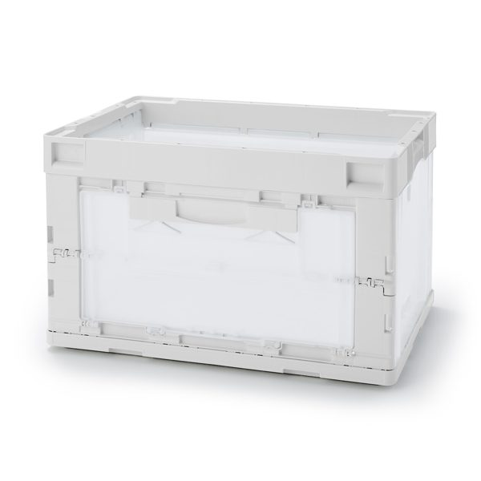
접이식 컨테이너 창문형 50L 반투명
34,900원 31,410원 MUJI WEEK 10%
무인양품 공식몰품절
네이버 무인양품일시품절
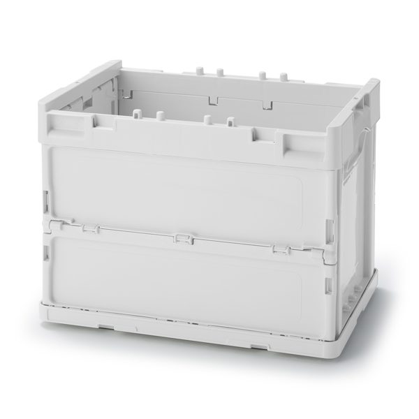
접이식 컨테이너 20L 화이트그레이
24,900원 22,410원 MUJI WEEK 10%
무인양품 공식몰판매중
네이버 무인양품판매중 · 11/19 도착
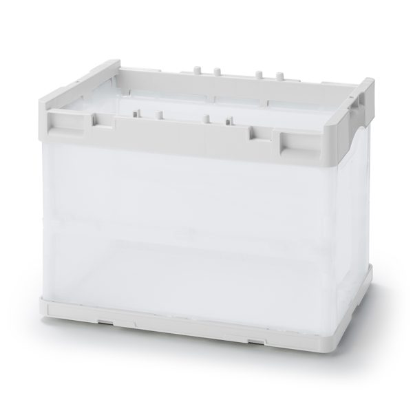
접이식 컨테이너 20L 반투명
24,900원 22,410원 MUJI WEEK 10%
무인양품 공식몰판매중
네이버 무인양품판매중 · 11/19 도착
일본 무인양품 라인업 (再生ポリプロピレン入り 折りたたみコンテナ)
일본 넷스토어는 11/11부터 보안 점검으로 전체 중단 중 → 가격·스펙은 공식 페이지 아카이브(본체 10월 초, 뚜껑 4월·8월) 기준. 엔화 세금 포함가. 단위 cm
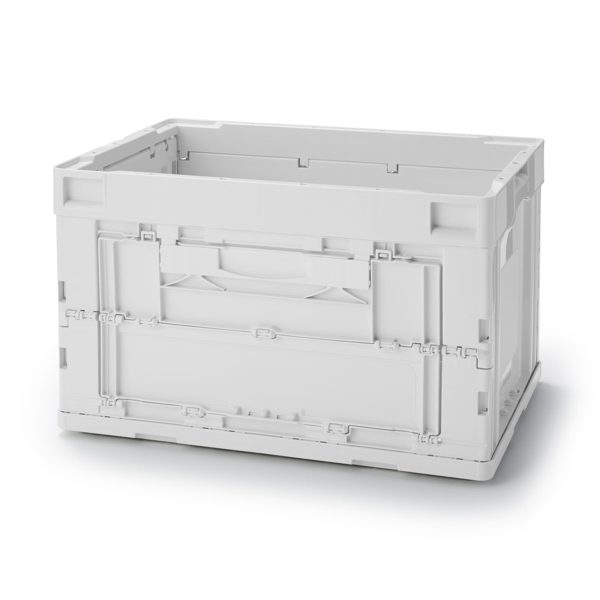
창문형 50L
화이트그레이
¥3,290
| 외치수 | 53×37×32.5cm |
| 내치수 | 49.5×33.5×30.5 |
| 내하중 | 15kg |
| 한국 | 있음 (34,900) |
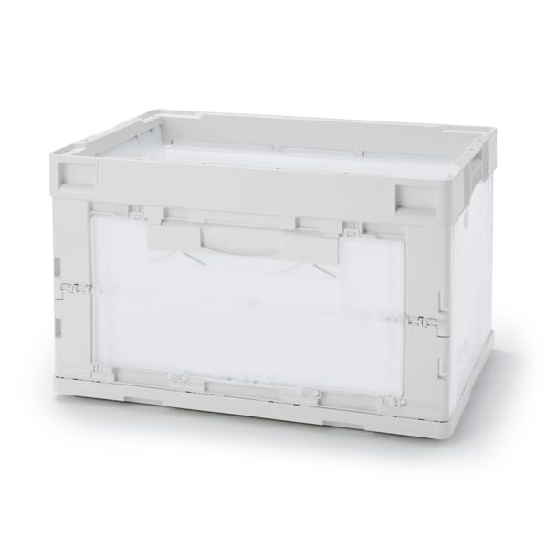
창문형 50L
반투명 (테두리 화이트그레이)
¥3,290
| 외치수 | 53×37×32.5cm |
| 내치수 | 49.5×33.5×30.5 |
| 내하중 | 15kg |
| 한국 | 있음 (34,900) |
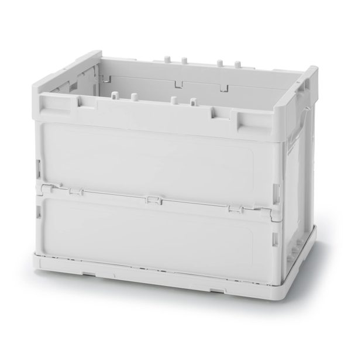
20L (창 없음)
화이트그레이
¥1,890
| 외치수 | 37×27×27.5cm |
| 내치수 | 33.5×23.5×25.5 |
| 내하중 | 10kg |
| 한국 | 있음 (24,900) |
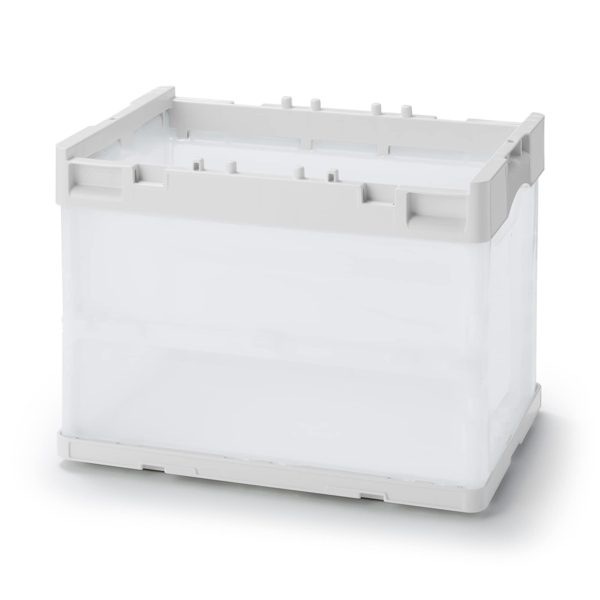
20L (창 없음)
반투명 (테두리 화이트그레이)
¥1,890
| 외치수 | 37×27×27.5cm |
| 내치수 | 33.5×23.5×25.5 |
| 내하중 | 10kg |
| 한국 | 있음 (24,900) |
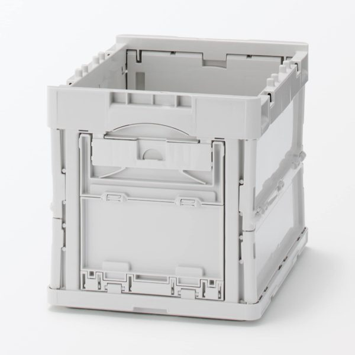
창문형 20L
화이트그레이
¥2,490
| 외치수 | 37×27×27.5cm |
| 내치수 | 33.5×23.5×25.5 |
| 내하중 | 10kg |
| 한국 | 한국 없음 |
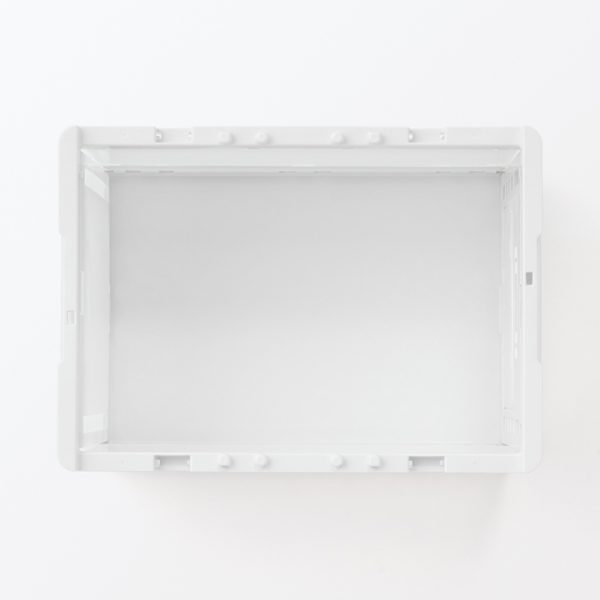
창문형 20L
반투명 (테두리 화이트그레이)
¥2,490
| 외치수 | 37×27×27.5cm |
| 내치수 | 33.5×23.5×25.5 |
| 내하중 | 10kg |
| 한국 | 한국 없음 |
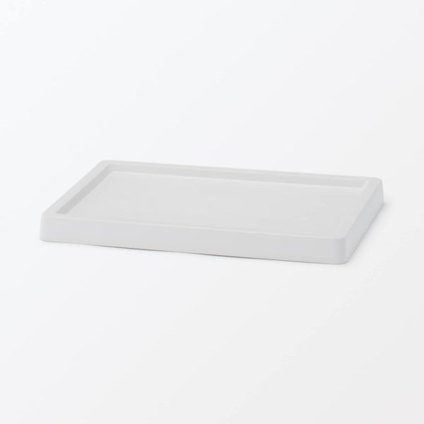
뚜껑 20L용
창문형·일반 겸용
¥490
| 외치수 | 37.5×27.5×3cm |
| 내치수 | - |
| 내하중 | 위에 쌓기 금지 |
| 한국 | 한국 없음 |
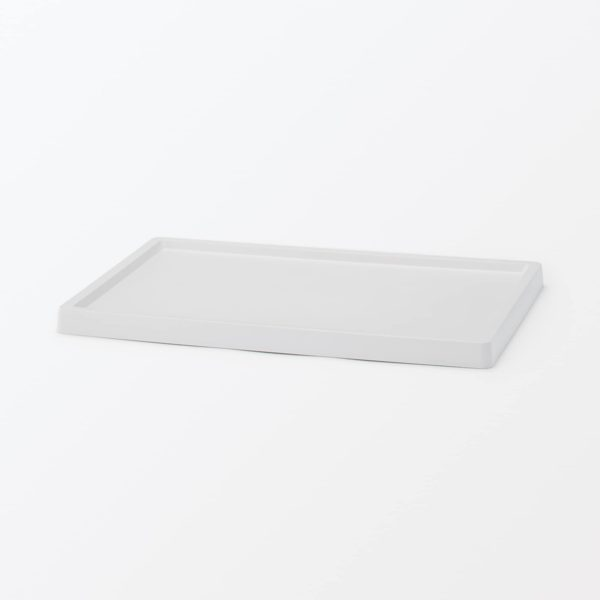
뚜껑 50L용
50L용
¥790
| 외치수 | 37.5×54.5×3cm |
| 내치수 | - |
| 내하중 | 위에 쌓기 금지 |
| 한국 | 한국 없음 |
출처: mujikorea.co.kr 상품 페이지, brand.naver.com/mujikorea 검색, muji.com/jp 상품 페이지(web.archive.org)